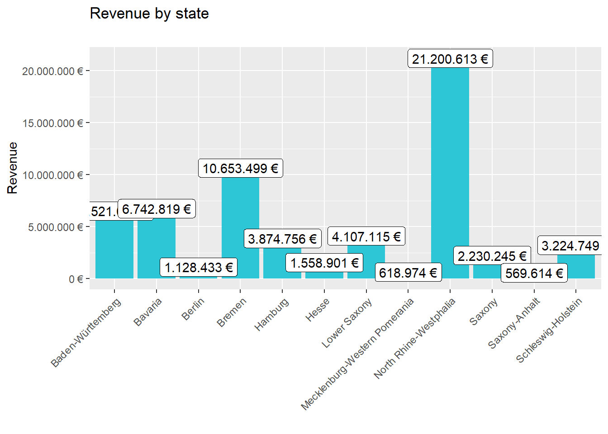

Journal (reproducible report)
Ahmed Elkhateeb
2020-11-27
1 Sales Analysis
Last compiled: 2020-12-06
# Data Science at TUHH ------------------------------------------------------
# Chapter 2 ----
# SALES ANALYSIS ----
# 2.1 Load libraries ----
library(tidyverse)
library(lubridate)
library(readxl)
# 2.2 Importing Files ----
bikes_tbl <- read_excel("data-science/00_data/01_bike_sales/01_raw_data/bikes.xlsx")
orderlines_tbl <- read_excel("data-science/00_data/01_bike_sales/01_raw_data/orderlines.xlsx")
bikeshops_tbl <- read_excel("data-science/00_data/01_bike_sales/01_raw_data/bikeshops.xlsx")
# 2.3 Joining Data ----
bike_orderlines_joined_tbl <- orderlines_tbl %>%
left_join(bikes_tbl, by = c("product.id" = "bike.id")) %>%
left_join(bikeshops_tbl, by = c("customer.id" = "bikeshop.id"))
# 2.4 Wrangling Data ----
bike_orderlines_wrangled_tbl <- bike_orderlines_joined_tbl %>%
# 2.4.1 Split location into state and city
separate(col = location,
into = c("city", "state"),
sep = ", ") %>%
# 2.4.2 Add the total price (price * quantity)
mutate(total.price = price * quantity) %>%
# 2.4.3 Rename columns in underscores instead of dots
set_names(names(.) %>% str_replace_all("\\.", "_"))
# 2.5 Business Insights ----
# 2.5.1 Sales by State
# Step 1 - Manipulate
sales_by_location_tbl <- bike_orderlines_wrangled_tbl %>%
# Select columns
select(state, total_price) %>%
# Grouping by state and summarizing sales
group_by(state) %>%
summarize(sales = sum(total_price)) %>%
# Turn the numbers into a currency format
# mutate(sales_text = scales::dollar(sales)) <- Works for dollar values
mutate(sales_text = scales::dollar(sales, big.mark = ".",
decimal.mark = ",",
prefix = "",
suffix = " €"))
# Step 2 - Visualize
sales_by_location_tbl %>%
# Setup canvas with the columns year (x-axis) and sales (y-axis)
ggplot(aes(x = state, y = sales)) +
# Geometries
geom_col(fill = "#2DC6D6") + # Use geom_col for a bar plot
geom_label(aes(label = sales_text)) + # Adding labels to the bars
geom_smooth(method = "lm", se = FALSE) + # Adding a trendline
# Formatting
# scale_y_continuous(labels = scales::dollar) + # Change the y-axis.
# Again, we have to adjust it for euro values
scale_y_continuous(labels = scales::dollar_format(big.mark = ".",
decimal.mark = ",",
prefix = "",
suffix = " €")) +
labs(
title = "Revenue by state",
subtitle = "",
x = "", # Override defaults for x and y
y = "Revenue"
) +
#rotate x-axis labels
theme(axis.text.x = element_text(angle = 45, hjust = 1))
# 2.5.2 Sales by Year and Location
# Step 1 - Manipulate
sales_by_year_location_tbl <- bike_orderlines_wrangled_tbl %>%
# Select columns and add a year
select(order_date, total_price, state) %>%
mutate(year = year(order_date)) %>%
# Group by and summarize year and main catgegory
group_by(year, state) %>%
summarise(sales = sum(total_price)) %>%
ungroup() %>%
# Format $ Text
mutate(sales_text = scales::dollar(sales, big.mark = ".",
decimal.mark = ",",
prefix = "",
suffix = " €"))
# Step 2 - Visualize
sales_by_year_location_tbl %>%
# Set up x, y, fill
ggplot(aes(x = year, y = sales, fill = state)) +
# Geometries
geom_col() + # Run up to here to get a stacked bar plot
# Facet
facet_wrap(~ state) +
# Formatting
scale_y_continuous(labels = scales::dollar_format(big.mark = ".",
decimal.mark = ",",
prefix = "",
suffix = " €")) +
labs(
title = "Revenue by year and location",
subtitle = "",
fill = "States" # Changes the legend name
) +
#rotate x-axis labels
theme(axis.text.x = element_text(angle = 45, hjust = 1))2 API Data Retrieval
Last compiled: 2020-12-06
# Data Science at TUHH ------------------------------------------------------
# Chapter 3 ----
# 3.1 API data retrieval ----
# 3.1.0 Load libraries
library(httr)
library(glue)
library(jsonlite)
library(keyring)
# 3.1.1 Code
#Returns information for the top 50 cities worldwide.
#keyring::key_set("token")
api_key = key_get("token")
url <- modify_url(url = "http://dataservice.accuweather.com", path = glue("/locations/v1/topcities/50?apikey={api_key}&language=en-us&details=false"))
raw_data <- GET(url)
stop_for_status(raw_data) # automatically throws an error if a request did not succeed
data_list <- raw_data %>%
.$content %>%
rawToChar() %>%
fromJSON()
glimpse(data_list)## Rows: 50
## Columns: 15
## $ Version <int> 1, 1, 1, 1, 1, 1, 1, 1, 1, 1, 1, 1, 1, 1, 1,...
## $ Key <chr> "28143", "113487", "60449", "101924", "10748...
## $ Type <chr> "City", "City", "City", "City", "City", "Cit...
## $ Rank <int> 10, 10, 10, 10, 10, 10, 10, 10, 10, 10, 10, ...
## $ LocalizedName <chr> "Dhaka", "Kinshasa", "Santiago", "Beijing", ...
## $ EnglishName <chr> "Dhaka", "Kinshasa", "Santiago", "Beijing", ...
## $ PrimaryPostalCode <chr> "", "", "", "", "", "10178", "", "", "EC4A 2...
## $ Region <df[,3]> <data.frame[26 x 3]>
## $ Country <df[,3]> <data.frame[26 x 3]>
## $ AdministrativeArea <df[,7]> <data.frame[26 x 7]>
## $ TimeZone <df[,5]> <data.frame[26 x 5]>
## $ GeoPosition <df[,3]> <data.frame[26 x 3]>
## $ IsAlias <lgl> FALSE, FALSE, FALSE, FALSE, FALSE, FALSE, FA...
## $ SupplementalAdminAreas <list> [<data.frame[0 x 0]>, <data.frame[0 x 0]>, ...
## $ DataSets <list> [<"AirQualityCurrentConditions", "AirQualit...3 Web Scraping
# Data Science at TUHH ------------------------------------------------------
# Chapter 3 ----
# 3.2 WEBSCRAPING ----
# 3.2.0 Load libraries
library(tidyverse) # Main Package - Loads dplyr, purrr, etc.
library(rvest) # HTML Hacking & Web Scraping
library(xopen) # Quickly opening URLs
library(jsonlite) # converts JSON files to R objects
library(glue) # concatenate strings
library(stringi) # character string/text processing
# 3.2.1 COLLECT PRODUCT FAMILIES
url_home <- "https://www.rosebikes.de/"
# Read in the HTML for the entire home webpage
html_home <- read_html(url_home)
# Web scrape the urls for the families
bike_family_tbl <- html_home %>%
# Get the nodes for the families ...
html_nodes(css = ".main-navigation-category-with-tiles__link ") %>%
# ...and extract the href information
html_attr('href') %>%
# Remove the product families sale
discard(.p = ~stringr::str_detect(.x,"sale$")) %>%
# Convert vector to tibble
enframe(name = "position", value = "family_class") %>%
# Save the family urls
transmute(family_url = str_glue("https://www.rosebikes.de{family_class}"))
# 3.2.2 COLLECT Gravel Categories
# Read in the HTML for the entire Gravel family webpage
html_family <- read_html(bike_family_tbl$family_url[3])
bike_category_tbl <- html_family %>%
#Get the nodes for categories
html_nodes(css = ".catalog-category-bikes__picture-wrapper") %>%
# ...and extract the href information
html_attr('href') %>%
# Convert vector to tibble
enframe(name = "position", value = "subdirectory") %>%
# Save the Categories urls
transmute(position, category_url = str_glue("https://www.rosebikes.de{subdirectory}"))
# 3.2.3 COLLECT Gravel/Backroad Bike Models
# Read in the HTML for the entire Gravel/Backroad category webpage
html_models <- read_html(bike_category_tbl$category_url[2])
bike_model_1_tbl <- html_models %>%
#Get the nodes for bike models
html_nodes(css = ".catalog-category-model__title") %>%
#...and extract the text
html_text()%>%
# Convert vector to tibble
enframe(name = "position", value = "model")
#Read models prices
model_price_1_tbl <- html_models %>%
#Get the nodes for bike models prices
html_nodes(css = ".catalog-category-model__price-current-value") %>%
#...and extract the text
html_text()%>%
# Convert vector to tibble
enframe(name = "position", value = "price")
#Joining category, model and price
bike_model_1_tbl <- left_join(bike_model_1_tbl, model_price_1_tbl, by = c("position")) %>%
tibble(category= bike_category_tbl$category_url[2]) %>%
separate(col = category,
into = c("remove", "category"),
sep = "fahrräder/") %>%
select(position, category, model, price)
# 3.2.4 COLLECT Gravel/Backroad al Bike Models
# Read in the HTML for the entire Gravel/Backroad category webpage
html_models <- read_html(bike_category_tbl$category_url[1])
bike_model_2_tbl <- html_models %>%
#Get the nodes for bike models
html_nodes(css = ".catalog-category-model__title") %>%
#...and extract the text
html_text()%>%
# Convert vector to tibble
enframe(name = "position", value = "model")
#Read models prices
model_price_2_tbl <- html_models %>%
#Get the nodes for bike models prices
html_nodes(css = ".catalog-category-model__price-current-value") %>%
#...and extract the text
html_text()%>%
# Convert vector to tibble
enframe(name = "position", value = "price")
#Joining category, model and price
bike_model_2_tbl <- left_join(bike_model_2_tbl, model_price_2_tbl, by = c("position")) %>%
tibble(category= bike_category_tbl$category_url[1]) %>%
separate(col = category,
into = c("remove", "category"),
sep = "fahrräder/") %>%
select(position, category, model, price)
# 3.2.5 COLLECT Gravel/Backroad limited Bike Models
# Read in the HTML for the entire Gravel/Backroad category webpage
html_models <- read_html(bike_category_tbl$category_url[3])
bike_model_3_tbl <- html_models %>%
#Get the nodes for bike models
html_nodes(css = ".catalog-category-model__title") %>%
#...and extract the text
html_text()%>%
# Convert vector to tibble
enframe(name = "position", value = "model")
#Read models prices
model_price_3_tbl <- html_models %>%
#Get the nodes for bike models prices
html_nodes(css = ".catalog-category-model__price-current-value") %>%
#...and extract the text
html_text()%>%
# Convert vector to tibble
enframe(name = "position", value = "price")
#Joining category, model and price
bike_model_3_tbl <- left_join(bike_model_3_tbl, model_price_3_tbl, by = c("position")) %>%
tibble(category= bike_category_tbl$category_url[3]) %>%
separate(col = category,
into = c("remove", "category"),
sep = "fahrräder/") %>%
select(position, category, model, price)
#Bind 3 categories tables
bike_model_tbl <- bike_model_3_tbl %>%
rbind(bike_model_2_tbl) %>%
rbind(bike_model_1_tbl) %>%
mutate(price = price %>% str_remove_all("\n")) %>%
mutate(model = model %>% str_remove_all("\n"))
#Print first 10 rows
bike_model_tbl %>% head(n = 10)## # A tibble: 10 x 4
## position category model price
## <int> <chr> <chr> <chr>
## 1 1 gravel/backroad-limited BACKROAD GRX RX810 Di2 1x11 Limit~ 4.599,00~
## 2 2 gravel/backroad-limited BACKROAD Force eTap AXS 1x12 Limi~ 4.699,00~
## 3 1 gravel/backroad-al BACKROAD AL GRX RX400 1.549,00~
## 4 2 gravel/backroad-al BACKROAD AL Apex 1x11 1.599,00~
## 5 3 gravel/backroad-al BACKROAD AL GRX RX600 1x11 1.799,00~
## 6 4 gravel/backroad-al BACKROAD AL GRX RX600 1.849,00~
## 7 5 gravel/backroad-al BACKROAD AL Apex 1x11 MULLET 1.899,00~
## 8 6 gravel/backroad-al BACKROAD AL GRX RX810 1x11 1.999,00~
## 9 7 gravel/backroad-al BACKROAD AL GRX RX810 2.049,00~
## 10 1 gravel/backroad BACKROAD GRX RX600 1x11 2.599,00~4 Patent Dominance
Last compiled: 2020-12-06
Top 10 US companies with the most assigned/granted patents.
# Data Science at TUHH ------------------------------------------------------
# Chapter 4 ----
# Load libraries ----
library(vroom)
library(tidyverse)
library(data.table)
library(readr)
# DATA IMPORT & Data Table Conversion ----
# Assignee Data ----
col_types_assignee <- list(
id = col_character(),
type = col_integer(),
name_first = col_skip(),
name_last = col_skip(),
organization = col_character()
)
assignee_tbl <- vroom(
file = "data-science/00_data/03_patents/assignee.tsv",
delim = "\t",
col_types = col_types_assignee,
na = c("", "NA", "NULL")
)
setDT(assignee_tbl)
# Patent Assignee Data ----
col_types_patent_assignee <- list(
patent_id = col_character(),
assignee_id = col_character(),
location_id = col_skip()
)
patent_assignee_tbl <- vroom(
file = "data-science/00_data/03_patents/patent_assignee.tsv",
delim = "\t",
col_types = col_types_patent_assignee,
na = c("", "NA", "NULL")
)
setDT(patent_assignee_tbl)
# Patent Data ----
col_types_patent <- list(
id = col_character(),
type = col_character(),
number = col_skip(),
country = col_skip(),
date = col_date("%Y-%m-%d"),
abstract = col_skip(),
title = col_skip(),
kind = col_skip(),
num_claims = col_double(),
filename = col_skip(),
withdrawn = col_skip()
)
patent_tbl <- vroom(
file = "data-science/00_data/03_patents/patent.tsv",
delim = "\t",
col_types = col_types_patent,
na = c("", "NA", "NULL")
)
setDT(patent_tbl)
# USPC Data ----
col_types_uspc <- list(
uuid = col_skip(),
patent_id = col_character(),
mainclass_id = col_character(),
subclass_id = col_skip(),
sequence = col_skip()
)
uspc_tbl <- vroom(
file = "data-science/00_data/03_patents/uspc.tsv",
delim = "\t",
col_types = col_types_uspc,
na = c("", "NA", "NULL")
)
setDT(uspc_tbl)
# DATA WRANGLING ----
# Renaming columns ----
setnames(assignee_tbl, "id", "assignee_id")
setnames(assignee_tbl, "type", "assignee_type")
setnames(patent_tbl, "id", "patent_id")
setnames(patent_tbl, "type", "patent_type")
# Joining / Merging Data ----
ch1_combined_data <- merge(x = assignee_tbl, y = patent_assignee_tbl,
by = "assignee_id",
all.x = TRUE,
all.y = FALSE)
ch2_combined_data <- merge(x = ch1_combined_data, y = patent_tbl,
by = "patent_id",
all.x = TRUE,
all.y = FALSE)
ch3_combined_data <- merge(x = ch1_combined_data, y = uspc_tbl,
by = "patent_id",
all.x = TRUE,
all.y = FALSE)
# Challenge 4 task 1 ----
ch1_keep_cols <- c("organization","assignee_type","patent_id")
ch1_combined_data <- ch1_combined_data[, ..ch1_keep_cols]
us_top10 <- ch1_combined_data[ assignee_type==2 & !is.na(patent_id) & !is.na(organization) , .N , by = organization][order(N, decreasing = TRUE)] %>% head(10)
write_rds(us_top10, "data-science/00_data/03_patents/us_top10.rds")
# Challenge 4 task 2 ----
ch2_keep_cols <- c("date","organization","assignee_type","patent_id")
ch2_combined_data <- ch2_combined_data[, ..ch2_keep_cols]
us_top10_2019 <- ch2_combined_data[ assignee_type==2 & lubridate::year(date) == "2019" & !is.na(patent_id) & !is.na(organization) , .N , by = organization][order(N, decreasing = TRUE)] %>% head(10)
write_rds(us_top10_2019, "data-science/00_data/03_patents/us_top10_2019.rds")
# Challenge 4 task 3 ----
ch3_keep_cols <- c("organization","assignee_type","patent_id","mainclass_id")
ch3_combined_data <- ch3_combined_data[, ..ch3_keep_cols]
ww_top10 <- ch1_combined_data[ assignee_type==2 || assignee_type==3 & !is.na(patent_id) & !is.na(organization) , .N , by = organization][order(N, decreasing = TRUE)] %>% head(10)
main_class_top5 <- ch3_combined_data[ organization %in% as.vector(unlist(ww_top10$organization)) & !is.na(patent_id) & !is.na(mainclass_id), .N , by = mainclass_id][order(N, decreasing = TRUE)] %>% head(5)
write_rds(main_class_top5, "data-science/00_data/03_patents/main_class_top5.rds")us_top10 <- readRDS("data-science/00_data/03_patents/us_top10.rds")
us_top10## organization N
## 1 International Business Machines Corporation 139091
## 2 General Electric Company 47121
## 3 Intel Corporation 42156
## 4 Hewlett-Packard Development Company, L.P. 35572
## 5 Microsoft Corporation 30085
## 6 Micron Technology, Inc. 28000
## 7 QUALCOMM Incorporated 24702
## 8 Texas Instruments Incorporated 24181
## 9 Xerox Corporation 23173
## 10 Apple Inc. 218205 Recent patent acitivity
Last compiled: 2020-12-06
Top 10 companies with the most new granted patents for 2019.
us_top10_2019 <- readRDS("data-science/00_data/03_patents/us_top10_2019.rds")
us_top10_2019## organization N
## 1 International Business Machines Corporation 9265
## 2 Intel Corporation 3526
## 3 Microsoft Technology Licensing, LLC 3106
## 4 Apple Inc. 2817
## 5 Ford Global Technologies, LLC 2624
## 6 Amazon Technologies, Inc. 2533
## 7 QUALCOMM Incorporated 2359
## 8 Google Inc. 2290
## 9 General Electric Company 1860
## 10 Hewlett-Packard Development Company, L.P. 15896 Innovation in Tech
Last compiled: 2020-12-06
Top 5 USPTO tech main classes of the top 10 companies (worldwide) with the most patents
main_class_top5 <- readRDS("data-science/00_data/03_patents/main_class_top5.rds")
main_class_top5## mainclass_id N
## 1 257 89912
## 2 438 51648
## 3 365 39023
## 4 370 34820
## 5 358 332747 Visualization Ch.1 Plot
Last compiled: 2020-12-06
# Data Science at TUHH ------------------------------------------------------
# Chapter 5 ----
# Load libraries ----
library(tidyverse)
library(lubridate)
library(maps)
# DATA IMPORT ----
col_types_covid <- list(
dateRep = col_date("%d/%m/%Y"),
day = col_double(),
month = col_double(),
year = col_double(),
cases = col_double(),
deaths = col_double(),
countriesAndTerritories = col_character(),
geoId = col_character(),
countryterritoryCode = col_character(),
popData2019 = col_double(),
continentExp = col_character(),
`Cumulative_number_for_14_days_of_COVID-19_cases_per_100000` = col_double()
)
covid_data_tbl <- read_csv("https://opendata.ecdc.europa.eu/covid19/casedistribution/csv", col_types = col_types_covid)
# Ch.1 Plot ----
plot_1_tbl <- covid_data_tbl %>% select(dateRep,countriesAndTerritories,cases) %>% arrange(dateRep) %>%
group_by(dateRep) %>% summarise(Total_cases = sum(cases))%>%
arrange(dateRep)
cumsum <- plot_1_tbl %>% mutate(cumsum = cumsum(Total_cases))
cumsum %>%
ggplot(aes(dateRep, cumsum)) +
theme_light() +
theme(
title = element_text(face = "bold", color = "#08306B")
) +
scale_x_date(limits = as.Date(c("2019-12-31","2020-12-06"))) +
ggtitle("limits = as.Date(c(\"2019-12-31\",\"2020-12-06\"))")+
scale_y_continuous(labels = scales::scientific_format(scale = 1e-6,
preix = "*",
suffix = "")) +
labs(
title = "Covid-19 Cases",
subtitle = "Number of cases trending up",
caption = "",
x = "Date",
y = "Cases",
color = "cumsum" # Legend text
)+
geom_line(size = 0.8, linetype = 1 , color = "blue")
8 Visualization Ch.2 Plot
Last compiled: 2020-12-06
# Ch.2 Plot ----
world_map <- map_data("world")
mor_rate_by_country <- covid_data_tbl %>% group_by(countriesAndTerritories)%>% summarise(Mor_rate = sum(deaths)/sum(popData2019))
mor_rate_by_country <- mor_rate_by_country %>% mutate(across(countriesAndTerritories, str_replace_all, "_", " ")) %>%
mutate(countriesAndTerritories = case_when(
countriesAndTerritories == "United Kingdom" ~ "UK",
countriesAndTerritories == "United States of America" ~ "USA",
countriesAndTerritories == "Czechia" ~ "Czech Republic",
TRUE ~ countriesAndTerritories
))
test <- world_map %>% left_join(mor_rate_by_country, by = c("region" = "countriesAndTerritories"))
test <- test %>% mutate(More_rate_factored = Mor_rate*10000000000)
test <- test %>% filter(Mor_rate > 0)
ggplot(test, aes(x = long, y = lat, group = group)) +
geom_polygon(aes(fill=More_rate_factored), colour = "white") +
expand_limits(x = test$long, y = test$lat)+
scale_fill_viridis_c(option = "C")+
labs(
title = "World Wide Mortality Rate",
subtitle = "",
fill = "Mortality Rate" # Changes the legend name
)